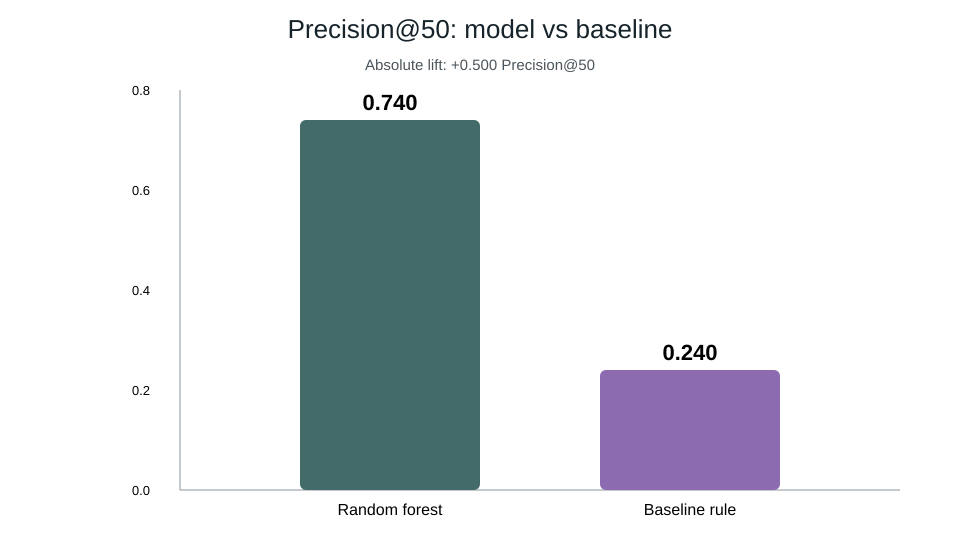

Lane: Refresh / Content Opportunity Scoring
Pages lose visibility for many reasons, so editorial teams need a repeatable way to decide what to review first. This capstone evaluates a content-refresh scoring workflow on an anonymized 30,000-page starter release, using observed decline as a proxy target and a client-holdout validation design. Logistic regression, decision tree, and random forest models were compared with a transparent baseline rule, with Precision@50 as the primary ranking metric. The selected random forest reached Precision@50 of 0.740 versus 0.240 for the baseline, while ROC AUC was 0.750 versus 0.627. The output is a ranked editorial review queue and decision-support artifact, not a causal claim about refreshes or Google's ranking algorithm.
The operational problem is prioritization: manually inspecting every page is expensive, while a simple threshold rule can miss interactions among visibility, freshness, engagement, and content signals. The ML task is therefore ranking/scoring pages for review. The action supported by the output is an ordered editorial queue.
The repository's reference pipeline reports 30,000 anonymized content-page rows, of which 16,262 (54.2%) carry the observed declining label. The public-safe analysis excludes client names, domains, URLs, titles, and search queries. One row represents one existing content page.
| Element | Definition |
|---|---|
| Unit | Existing content page |
| Proxy target | Observed declining trend |
| Validation | Client-holdout split |
| Primary metric | Precision@50 |
| Public artifacts | Model report, ranked queue preview, SVG charts |
The reference pipeline compares logistic regression, decision tree, and random forest models. A transparent hand-written refresh rule is the baseline. Model selection uses Precision@50 on the same client-holdout validation design. The final queue combines model probability with the baseline score and attaches reason codes for editorial interpretation.
Leakage and safety controls include removing identifier-like fields from predictive use and keeping client/page identity out of the public paper. Feature importance is interpreted as directional association within this release, not as causal effect.
| Model | ROC AUC | Average precision | Precision@50 | Recall | F1 |
|---|---|---|---|---|---|
| Decision tree | 0.742 | 0.575 | 0.540 | 0.716 | 0.634 |
| Logistic regression | 0.700 | 0.522 | 0.400 | 0.567 | 0.566 |
| Random forest | 0.750 | 0.618 | 0.740 | 0.744 | 0.640 |
| Baseline rule | 0.627 | 0.468 | 0.240 | — | — |


Start review at the top of the queue, especially high-confidence pages with visible demand and decline risk. Use CTR-review reason codes for pages with meaningful impressions and weak CTR signals, engagement-review reason codes for pages with visible sessions and weaker engagement signals, and monitor lower-confidence items until new evidence arrives.
| Rank | Content ID | Score | Model probability | Action | Trend |
|---|---|---|---|---|---|
| 1 | content_1f080331fa2b | 81.64 | 0.782 | refresh_and_review_ctr | down |
| 2 | content_6aa43079fb0c | 81.45 | 0.788 | refresh_and_review_ctr | down |
| 3 | content_d6570c51c9bd | 81.43 | 0.847 | refresh_and_review_ctr | down |
| 4 | content_72e800a9c214 | 81.03 | 0.774 | refresh_and_review_ctr | down |
| 5 | content_e04eb9549989 | 80.87 | 0.815 | refresh_and_review_ctr | down |
| 6 | content_b69288c5e701 | 80.75 | 0.796 | refresh_and_review_ctr | down |
| 7 | content_9b6df29f7889 | 80.63 | 0.846 | refresh_and_review_ctr | down |
| 8 | content_bb6ebb5ec8c8 | 80.37 | 0.835 | refresh_and_review_ctr | down |
| 9 | content_4d76cdb3387b | 80.36 | 0.843 | refresh_and_review_ctr | down |
| 10 | content_b4f35d640b1c | 80.32 | 0.844 | refresh | down |
The complete public-safe top-25 table is stored at assets/ranked_recommendations_top25.csv.
Run python scripts/run_all.py from the repository root after restoring the bundled anonymized CSV if it is absent locally. The capstone notebook is work/notebooks/capstone.ipynb. The pipeline writes the model report, ranked queue, summary JSON, and SVG charts under outputs/.
This work was completed for the FlyRank ML Internship using the anonymized starter release supplied for the program. Data use and publication are constrained to the public-safe rules of the internship repository.
Repository artifacts: outputs/model_report.md, outputs/refresh_queue_sample.csv, paper/assets/model_vs_baseline.svg, and paper/assets/ranked_recommendations_top25.csv.